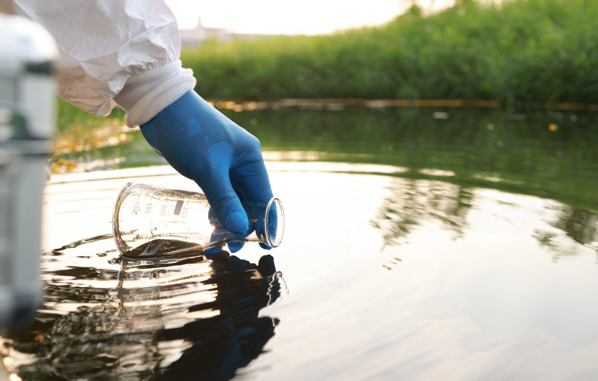

Community Clean-Up
Join us in cleaning rivers and lakes, creating safer water sources for all. Volunteers welcome!
Water Literacy Program
Educational workshops on water conservation and sustainable use. Available to schools and organizations.

Rainwater Harvesting Kit
A practical starter kit for rainwater collection, designed to meet your household needs sustainably.